Antes, la taquilla también podía
sentarse en primera fila
En 1994, Forrest Gump ganó el Óscar a Mejor Película.
Escenas como la pluma volando sobre la ciudad, la eterna maratón,
el encuentro con John F. Kennedy o la muerte de Bubba le merecieron
el aplauso de la crítica.
Pero no solo eso: también la instalaron entre las películas más
taquilleras de la década. Y si miramos hacia atrás, ese cruce entre
público y Academia no era una rareza.
1994Ganadora
Óscar a Mejor Película
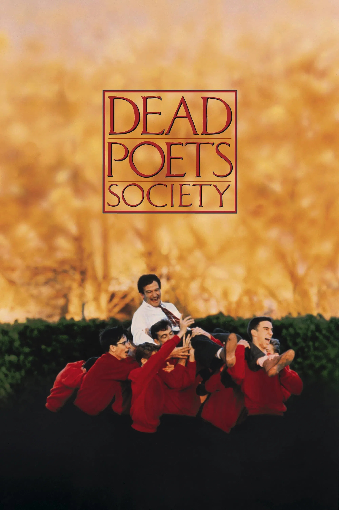
1989Nominada
óscar a Mejor Película
Unos años antes, La sociedad de los poetas muertos había
mostrado que una película no necesitaba explosiones, franquicias
ni mundos fantásticos para convertirse en un fenómeno masivo.
Bastó una sala de clases, un profesor carismático y un grupo de jóvenes
enfrentados al peso de las expectativas. La película logró instalarse
entre las más vistas de su año y, además, fue nominada al óscar a
Mejor Película.
Todavía era posible que una historia popular y una película prestigiosa
fueran, al mismo tiempo, la misma cosa.
Cuando las películas más vistas
también competían por Mejor Película
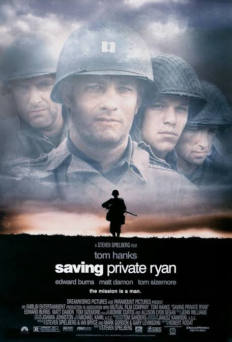
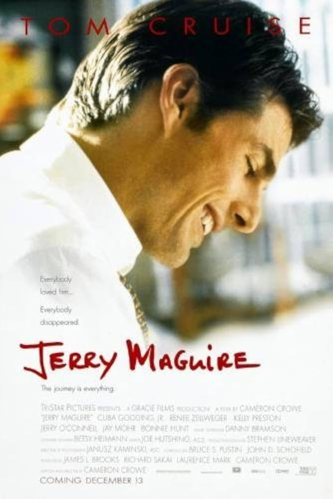
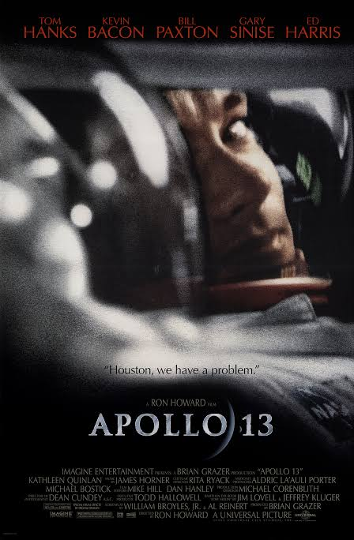
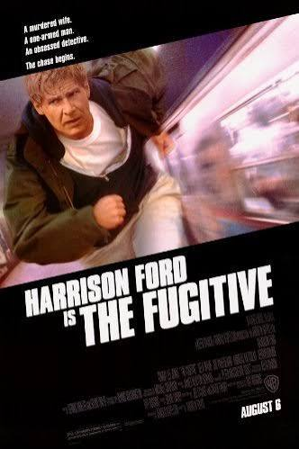
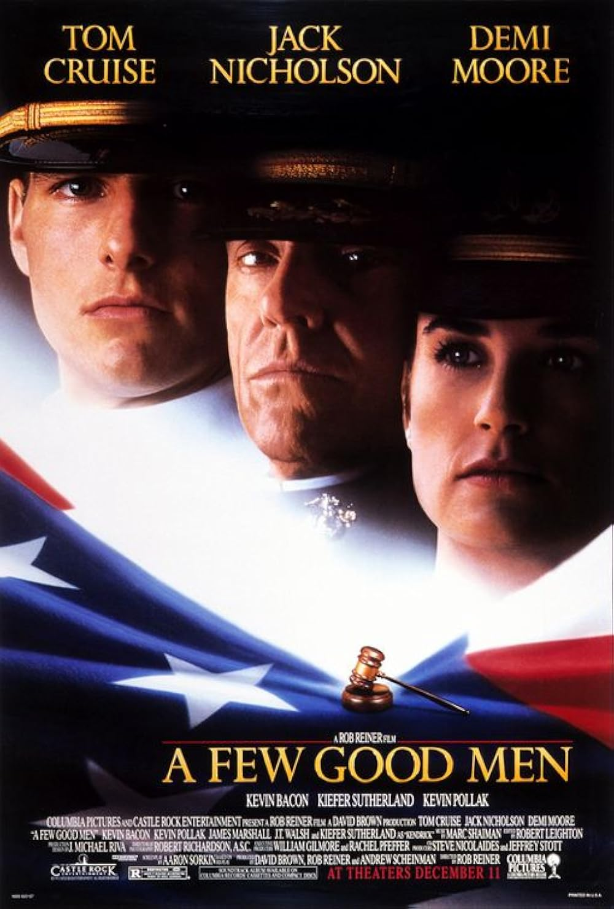
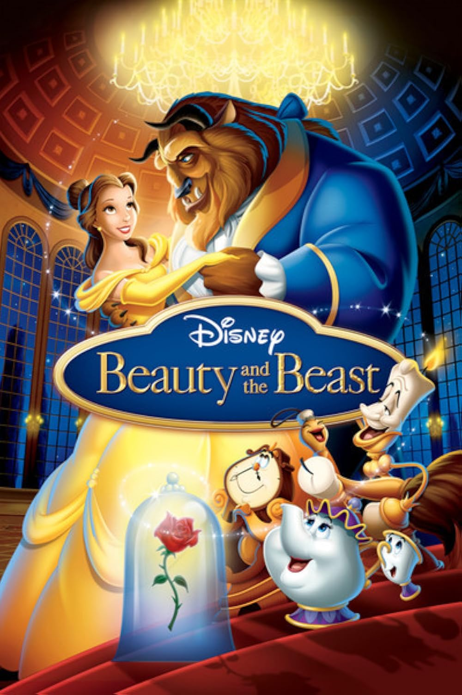
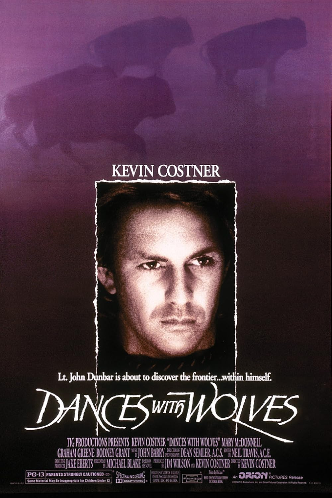
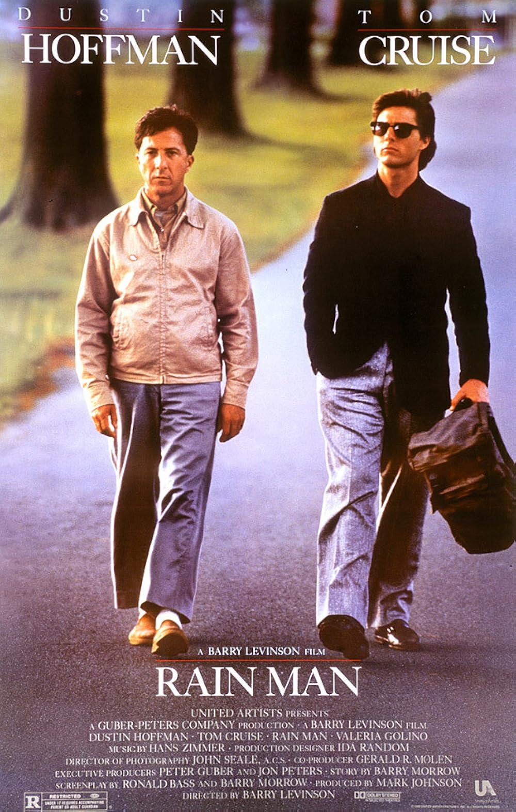
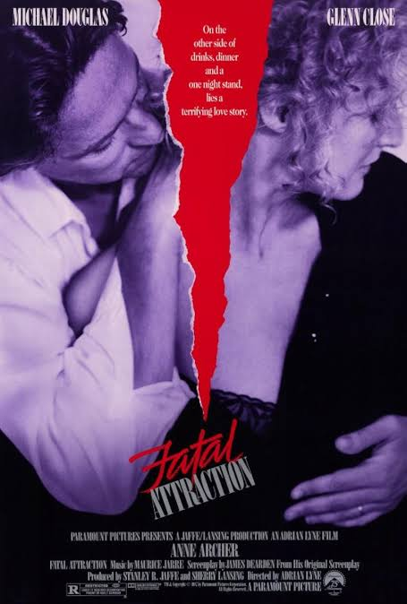
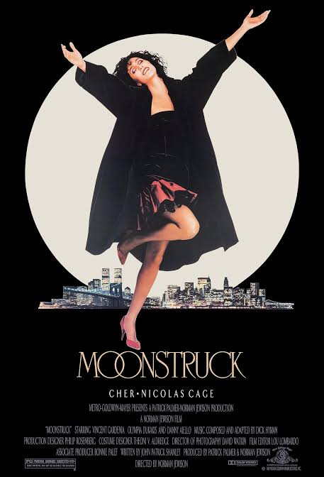
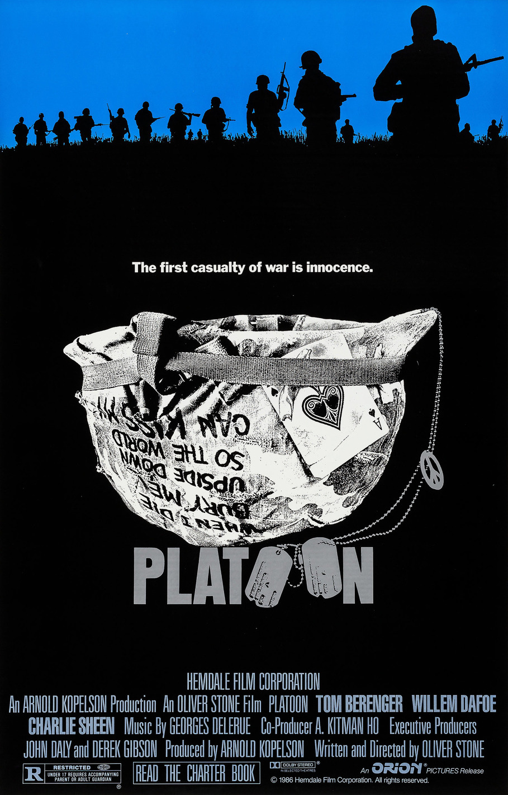
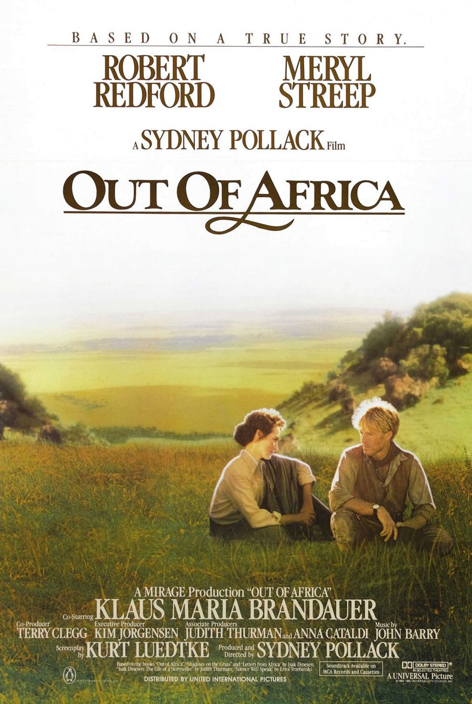
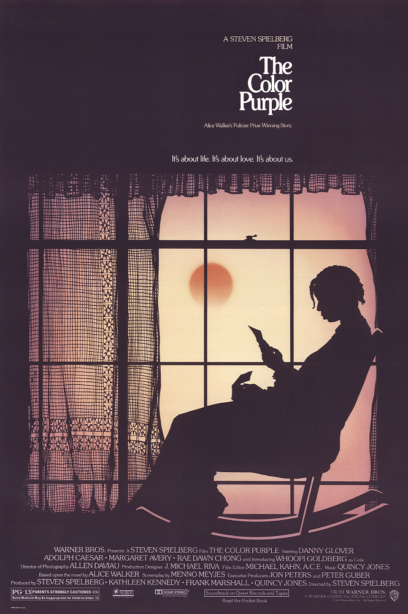
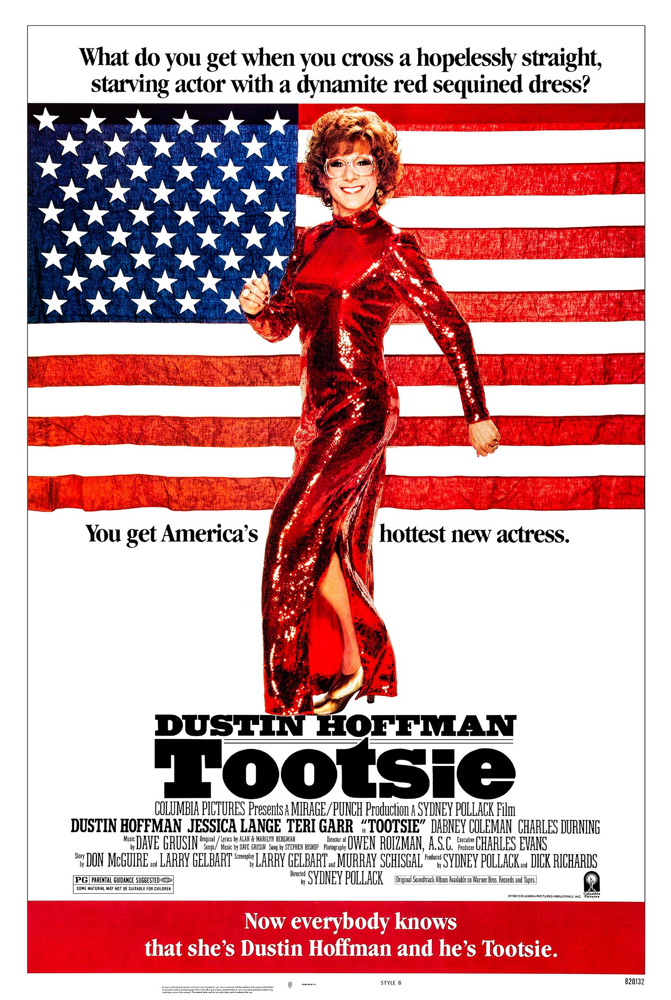
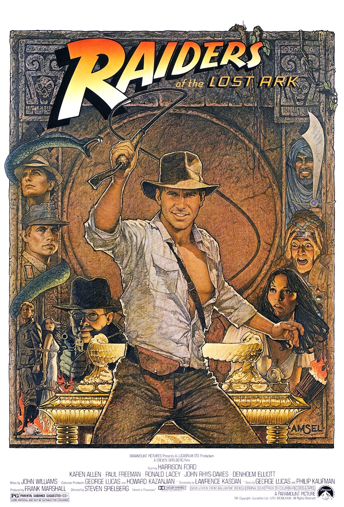
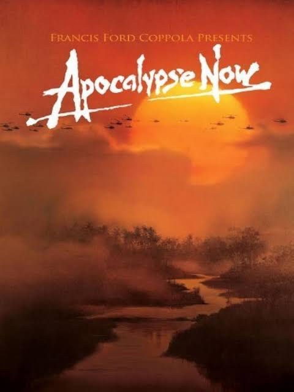
Durante años, estos cruces no fueron excepciones aisladas. La taquilla y
los Óscar todavía podían coincidir en una misma película.
Sin embargo...
Con el paso del tiempo, algo empezó a ocurrir.
Casos como estos fueron tornándose cada vez más excepcionales.
Si miramos solo a las películas taquilleras que además ganaron
el Óscar a Mejor Película, en los últimos 25 años
apenas aparecen
3
casos.
GanóÓscar 2001
GanóÓscar 2004
GanóÓscar 2024
Estos tres casos muestran que el cruce no desapareció por completo.
Pero justamente por eso importan: ya no parecen parte de una regla,
sino excepciones dentro de una relación cada vez más irregular.
Pero entonces... ¿cuándo empezó a romperse el vínculo entre taquilla y Óscar?
Para responderlo, miramos año a año cuántas de las películas más taquilleras
lograron entrar a la categoría Mejor Película.
Mapa de calor de películas taquilleras que fueron entrar a la categoría "Mejor Película"
El mapa muestra el quiebre año a año. Pero visto por períodos,
la historia se entiende mejor: no fue una separación inmediata,
sino una grieta que avanzó por etapas. Observemos con más detalle.
LA GRIETA
La relación entre taquilla y Óscar pasó de una coincidencia frecuente
a una serie de reencuentros cada vez más excepcionales.
Las distintas épocas por las cual pasó el cine taquillero y el de prestigio
La ruptura, entonces, no significa que el cruce haya desaparecido.
Significa que dejó de ser una continuidad y empezó a depender de excepciones.
Para entender esa distancia, hay que mirar los dos caminos por separado:
el camino comercial de la taquilla y el camino del prestigio de los Óscar.
Dos caminos para triunfar
La brecha ya está planteada. Para avanzar, necesitamos ordenar el análisis:
no todas las películas triunfan por las mismas razones, ni todos los éxitos
se miden con el mismo criterio. Por eso, antes de seguir, esta historia
separa dos formas distintas de entender el triunfo en Hollywood.
Taquilla
Consideramos como camino comercial las películas que destacaron por su recaudación entre 1977 y 2025.
Presionay conocerás
Premios Óscar
Consideramos como camino del prestigio las películas nominadas o ganadoras en la categoría Mejor Película.
Uno de estos caminos, quizás el que más nos acompañó durante nuestra vida,
es el comercial. Veamos cómo fue mutando el cine taquillero.
El éxito que llena salas
El cine comercial se volvió cada vez más amplio, exportable
y apto para públicos masivos.
Hollywood encontró una fórmula: películas
suficientemente intensas para no parecer infantiles, pero suficientemente
moderadas para no excluir audiencias.
Las categorías de edad que fueron dominando el cine taquillero
¿Qué tipo de películas empezó a privilegiar la taquilla?
Lo que podemos ver es un giro de la gran pantalla: la taquilla empezó a
favorecer películas menos restringidas, capaces de reunir adolescentes,
familias y públicos diversos en salas cada vez más globales y masivas.
La categoría PG-13 resume esa estrategia: permite acción, conflicto y
espectáculo sin cerrar el acceso a grandes audiencias. Así, triunfar
comercialmente significa ser más exportable, flexible y visible en circuitos
internacionales de exhibición masiva actuales.
Ticket de taquilla
El éxito que entrega
prestigio en los Premios Óscar
La carrera de las productoras por el Óscar a Mejor Película
El cine prestigioso también cambió sus protagonistas. Dejó de pertenecer
exclusivamente a las productoras tradicionales, quienes dominaban tanto en
la taquilla como en las nominaciones y victorias del Óscar.
Son pocos las que perduran en el tiempo como Warner Bros.
Nuevos actores empiezan a tomar vuelo. Las nominaciones son marcadas
con las nuevas productoras que son cada vez más reconocidas como A24 y Netflix.
Reflejando un cambio en lo que es considerado digno de la Academia.
Había una vez una coincidencia. Un mismo camino que unía el éxito como uno solo,
pero el destino tenía otros planes y lo quebró en dos.
Camino del prestigio
Premios Óscar
Esta base reúne películas nominadas y ganadoras en la categoría Mejor Película.
Camino comercial
Taquilla
Esta base reúne películas que destacaron por su recaudación y permite observar qué tipo de cine logró llenar salas.